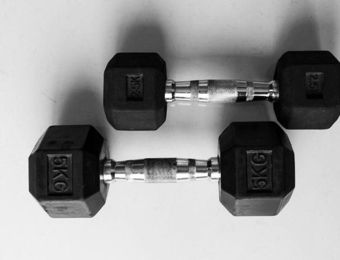

ADHD Performance Coaching For Late Diagnosed Men.
In 90 days you’ll have your focus, your follow through and your energy back. Not by forcing more discipline, but by building a foundation your brain can actually run on. Better food. Deeper rest. Mornings that set you up instead of wearing you down. A body and mind that finally keep pace with your ambition. One small, doable step at a time.
One system, three pillars.
Every week you make one or two small changes in each pillar. Small enough to stick, big enough to feel.
Nutrition
Let's start adding foods that feed your brain and provide it the micronutrients it needs so focus and follow through just become who you are. We incorporate supplements as a way to fill any gaps.

ExerciseLifestyle
An evening routine that gets you real rest. A morning routine that gets you moving. Your body sets the stage for your focus, so this is where a lot of the change happens.
Goal Setting
Set a daily game plan and stick to it. Each kept promise builds proof that you're someone who follows through. That proof is what keeps you going after the 90 days.
Small changes. Weekly coaching. That's it.
Discovery call
We talk about where you are and where you want to be and start working on a game plan to get you there.
Kickoff call
We set your one big goal and determine what that looks like at 30, 60 and 90 days. Then we look at how you sleep, start your day, exercise and what you eat.
One or two small changes a week
Food, evening routine, morning routine and your daily game plan. Never everything at once.
Weekly coaching
Every week we review what worked, fix what didn't and pick your next small change.
Day 90 review
We look back at where you started, what changed and how you keep it going on your own.
Built for a specific kind of man.
This is for you if…
- You're 40 or older and found out about your ADHD later in life
- You're working and ready to invest in yourself
- Your family has your back on making changes
- You know something has to change and you want help doing it
This is not for you if…
- You want a quick fix or a magic pill
- You're not willing to change how you eat or sleep
- You can't show up for the weekly calls
- You're looking for medical or medication advice.

ADHD Performance Coach.
I'm 56 and was diagnosed with ADHD at 52, which finally explained so many of the struggles I faced all my life. From the lack of focus, poor follow through and severe procrastination to rejection sensitivity, anxiety, depression and addiction.
But that diagnosis also gave me the opportunity to take back my life and manage what I actually had control over, like my lifestyle and nutrition. I also broke free from addiction and now live the life I've always dreamed of.
Today I'm a certified Jay Shetty life coach and an ADHD Performance Coach helping men late diagnosed with ADHD focus on the basics and build a level of focus and follow through they never thought was possible.
I also run The ADHD Performance Lab, a community where we work on focus and follow through together, and I write ADHD 4 Minute Fridays, a short weekly newsletter you can read with your coffee.
Start with a discovery call.
Same system, same 90 days. Pick the one that fits how you like to work.
The 90 Day Group Coaching
Go through the 90 days alongside other men who get it while getting two group calls every week.
- Two live group calls every week
- A 45 minute one on one sessions every week
- Food, supplement, evening and morning routine plans
- A group that keeps you honest between calls
Private Coaching
Just you and me. Every call is built around your goal, your schedule and your life.
- Weekly 1 hour coaching calls
- A kickoff call to set your goal and starting point
- Your own food, supplement and routine plan
- Limited to 4 private clients per month
Questions people ask me.
What's the difference between the cohort and one on one?
Both follow the same 90 day system. The cohort adds two group calls a week and two short private sessions, so you get the group and time with me. One on one is a full hour each week that's all about you.
How does Love It or Leave It work?
You start with one month. If you love it, you keep going for months two and three. If it's not for you, you stop after month one and that's it.
Do I need an ADHD diagnosis?
[YOUR ANSWER]
How much time will this take each week?
Your calls, plus a few minutes a day on the small change you're working on. The changes are kept small on purpose so they fit into a busy life.
Will you tell me what supplements or medication to take?
No. I'm a coach, not a doctor. We talk about food and supplements so you know what to ask, and you check any changes with your doctor.
What happens on the discovery call?
It's a relaxed conversation. We talk about what's going on, what you want to change and whether one of the programs is a good fit. No pressure either way.
Let's talk about your next 90 days.
Pick a time that works for you. It's a relaxed conversation about where you are, where you want to be and whether coaching is a good fit.